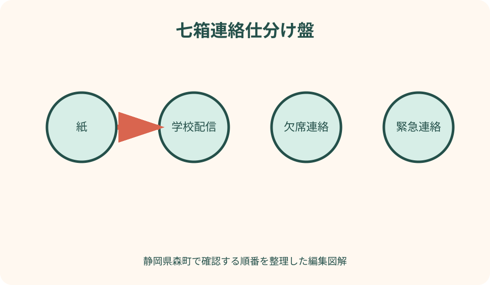
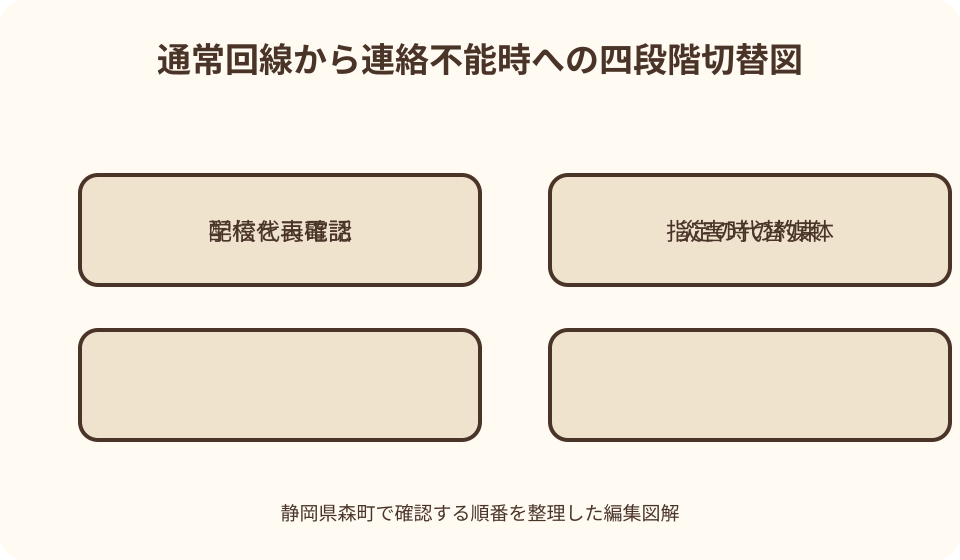

学校・就学・家庭記録｜最終確認 2026-08-10
静岡県森町の学校・家庭連絡を整理｜紙・配信・欠席・緊急時の確認表
学校との連絡は、アプリやメールを登録すれば完成するものではありません。紙でしか届かない通知、学校からの一斉配信、家庭からの欠席連絡、個別の緊急連絡、きょうだいごとの回答期限は役割が違います。森町の学校窓口と文部科学省の一次情報を確認しながら、誰が受け取り、誰が返答し、つながらないときに何へ切り替えるかまで決める方法をまとめます。

編集イラスト結論：媒体ではなく連絡の目的で分ける
家庭の連絡表は、学校からのお知らせ、家庭からの届出、緊急時の呼出し、日常相談の四列にします。紙、アプリ、メール、電話は手段であり、同じアプリでも用途と締切が違うからです。
各列に、受け取る人、確認する時刻、返答する人、完了の印、代替手段を置きます。「家族の誰かが見る」という運用をやめ、平日朝と日中に動ける担当を分けます。
学校ごと、学年ごとに使う方法は異なる可能性があります。この記事が特定のサービス名や欠席受付時刻を決めるのではなく、在籍校から届く最新資料を正式な基準にします。
連絡を記録する目的は、家庭や学校を監視することではありません。子どもの予定、健康、安全に必要な情報を、期限内に正しい相手へ返すための共同作業です。
森町の学校一覧から正式な連絡先を確かめる
森町公式の学校一覧には、森小学校、宮園小学校、飯田小学校、森中学校、旭が丘中学校の所在地と電話番号、学校ホームページへの入口が掲載されています。まず在籍校の正式な連絡先を確認します。
学校教育課の連絡先も別に控えます。学校へ尋ねる事項と教育委員会へ尋ねる事項は同じではないため、学校へ電話がつながらないだけで教育委員会へ欠席連絡を送るような自己判断はしません。
検索結果に古い学校ページや第三者の電話番号が出ることがあります。森町公式の一覧から開き、ページの更新日と学校から配布された資料を照合します。
転校直後は、前籍校の配信登録が残り、新しい学校の登録が未完了になる期間が生じ得ます。解除日、登録日、初回受信確認を一つの行にして管理します。
入学時に聞く連絡手段の全体像
最初に、学校から家庭へ送る一斉配信、個別連絡、紙の便り、学校ホームページの役割を聞きます。同じ予定が複数媒体に載るのか、どれか一つだけなのかを確認します。
次に、家庭から学校へ送る欠席、遅刻、早退、相談、提出物の方法を用途別に聞きます。返信できない一斉配信へ欠席理由を返すなど、媒体の取り違えを防ぎます。
登録できる保護者の人数、きょうだいの追加方法、機種変更、メールアドレス変更、卒業・転校時の解除を確認します。家族共有アドレスを使う場合は、誰が毎日見るかも決めます。
学校が紙で配る登録案内は、設定完了まで保管します。QRコードや初期情報が含まれる場合は、不特定多数が見られる場所へ写真を載せません。
紙の配布物は帰宅後の一方向レーンに置く
紙は、子どものかばんから出す場所、保護者が読む場所、返信後に戻す場所を一直線にします。机や台所へ複数の山を作らず、未確認の入口を一つにします。
受け取ったら、要返信、要保存、予定のみ、処分確認待ちの四つに分類します。行事名だけを家族カレンダーへ写し、集合時刻や持ち物の記載を捨てないよう原本の所在を残します。
提出期限は紙の右上へ日付を書き、カレンダーにも登録します。子どもへ「明日出して」と渡すだけでなく、かばんへ戻した日まで完了欄に記します。
紙が見当たらない場合は、友人家庭から写真をもらって正式版とせず、学校へ再発行やデジタル掲載の有無を尋ねます。家庭ごとに記載が異なる書類もあります。
学校配信は登録完了と受信成功を分ける
登録画面で完了と表示されても、実際の配信が受信箱へ届くとは限りません。確認メール、学校の試験配信、迷惑メール振分けを順に確認し、受信成功日を記録します。
端末の通知が出ない場合でも、配信自体はアプリ内や受信箱に届いていることがあります。通知設定、節電設定、通信制限、迷惑メール設定を確認し、サービスの公式手順に従います。
保護者二人で登録する場合は、一方が受け取れれば完了とせず、双方で同じ試験配信を確認します。届かなかった人の代替確認担当を、復旧まで決めます。
学校配信の画面を家族チャットへ転送するときは、他の児童名、連絡先、個別情報が含まれないか見ます。必要な予定だけを家族用の文面へ書き直す方法もあります。
欠席・遅刻・早退は学校指定の方法と締切に合わせる
欠席連絡は、児童生徒名、学年・組、日付、欠席・遅刻・早退の別、理由、連絡が必要な事項を学校指定の項目で送ります。自由文へ必要以上の診療情報を書きません。
文部科学省は、フォームなどを使って欠席連絡をデジタル化する事例を紹介していますが、これは全国一律の方法ではありません。森町の在籍校が案内する受付方法と締切を確認します。
送信後に受付表示や自動返信がある場合は確認します。送った画面が消えた、期限後になった、子どもが登校していないのに学校から確認がない場合の連絡先も先に聞きます。
遅刻して保護者が送る場合、校内のどこまで同行するか、早退の迎えは誰に引き渡されるかも学校へ確認します。デジタル送信だけで出入りの手順が完了するとは考えません。

欠席理由と健康情報の共有範囲を考える
体調不良の連絡では、学校が必要とする症状、発症日、受診予定、感染症に関する指示などを確認します。病名を家庭で推測して入力せず、未受診ならその事実を示します。
詳しい診断書、薬、家庭事情は、欠席フォームの自由記述へすべて入れるのではなく、担任や養護教諭など指定された相手へ別の安全な方法で伝えるかを尋ねます。
文部科学省の教育データに関する留意事項は、個人情報とプライバシーの適正な取扱いを前提としています。家庭側も共有目的と送信先を確認します。
連続して休む場合は、毎日の連絡が必要か、学校からの教材や面談をどう受けるかを相談します。初日の連絡だけで以後の欠席が自動的に伝わると仮定しません。
緊急連絡先は電話番号ではなく連絡順で書く
第一、第二、第三連絡先に、氏名、続柄、電話番号、平日につながる時間、勤務先から学校までの目安を書きます。番号の順が、迎えに行ける順と同じかも確認します。
勤務中に私用携帯を見られない場合は、勤務先への連絡が可能か、内線や呼出しに必要な情報を本人と勤務先で確認します。学校へ無断で同僚の番号を登録しません。
祖父母など別世帯の人を登録する場合は、本人の同意を得て、学校名、子どもの学年、どの状況で連絡が来るかを説明します。登録したまま知らせない状態を避けます。
年に一度、機種変更、退職、勤務時間、家族関係の変化を見直します。学校へ更新を提出した日と、家庭の一覧を更新した日を別々に残します。
きょうだいは世帯一件でなく子ども別に管理する
同じ学校のきょうだいでも、学年便り、行事、提出物は別です。配信の件名や紙へ子どもの名前を付け、家庭カレンダーにも対象者を明記します。
一斉配信が世帯に一通なのか、児童ごとに届くのかを学校へ確認します。同じ内容が二通来ても故障と決めつけず、登録単位と対象学年を見ます。
別の学校に通うきょうだいは、暴風雨、行事、下校時刻の判断が異なる場合があります。一校の連絡を家族全員へ当てはめず、学校別の列で確認します。
上の子へ下の子の紙を預ける、下の子のアカウントで両方を回答するなど、学校が指定していない代用を家庭判断で行いません。提出対象と送信者を合わせます。
行事連絡は予定・申込・変更を三枚に分ける
年間予定は見通しを作る資料、参加申込は意思表示、直前変更は最新条件です。年間予定に載っているだけで、集合時刻や実施が確定したとは考えません。
申込フォームや紙を提出したら、回答内容、送信日、受付確認を残します。保護者二人が別々に回答して内容が食い違わないよう、担当を一人決めます。
延期・中止の配信が来たら、旧予定を消すだけでなく、新しい日、弁当、下校、放課後の迎えを更新します。きょうだいの予定に同じ変更を広げません。
写真や個人情報の同意は、行事参加の回答と別項目の場合があります。画面を早く進めず、同意の対象、期間、撤回方法を学校の説明で確かめます。
日常相談は緊急連絡の回線へ載せない
学習、友人関係、支援、家庭状況など話し合いが必要な事項は、欠席フォームの短い欄や一斉配信の返信で完結させず、面談や電話の予約方法を尋ねます。
相談文は、起きた事実、子どもの言葉、家庭で行ったこと、学校へ確認したいことを分けます。相手の意図や結論を推測した表現を事実欄へ書きません。
すぐ回答が必要でない場合は、希望する連絡方法とつながる時間帯を伝えます。担任個人の私的連絡先を求めず、学校が指定する経路を使います。
相談内容が緊急性を含む場合は、その旨を最初に示し、通常の返信を待つべきか学校へ確認します。差し迫った事故・犯罪・救急は状況に応じた公的通報を優先します。
森町の防災配信と学校配信を混同しない
森町は防災情報を配信する森町防災メールを案内しています。町の防災配信は地域の情報を得る経路であり、学校からの休校・下校・引渡し連絡と同じものとは限りません。
家庭では、町の防災情報、学校の一斉連絡、気象情報を別の受信欄に置きます。一つが届かなかった場合も、別の情報から学校判断を推測せず、学校の確認方法を使います。
防災メールについて森町は、令和八年三月に終了した旧サービスに代わる防災情報の配信として案内しています。古い登録手順を保存している家庭は現在の公式ページで更新します。
災害時には通信が集中し、平常時と同じ速度で届かない可能性があります。学校が事前に示す引渡し、待機、迎えの条件を紙でも保管します。
連絡不能時は四段階の切替表を作る
第一段階はアプリ・メールの再読込と通信状態の確認、第二段階は学校が指定する別媒体、第三段階は学校の代表電話、第四段階は事前に示された災害時行動です。順番は学校の案内に合わせます。
学校電話が話中でも、短時間に何度も掛け続けると他の緊急連絡を妨げる場合があります。再連絡の目安や別窓口が案内されているか、平常時に確認します。
停電、端末故障、保護者が病気で操作できない場合に備え、第二連絡者が紙の連絡表を持ちます。パスワードを紙へそのまま書くのではなく、家族の安全な管理方法を決めます。
子どもには、保護者と会えないときに勝手に帰路や待合せ場所を変えず、教職員へ伝えるよう説明します。学校の引渡し手順と家庭の独自ルールを競合させません。
配布物の保管期限を三段階にする
短期保管は、行事終了や提出確認までの便りです。終了日にすぐ捨てず、精算、返却、振替日など後続事項がないか確認してから処分します。
年度保管は、年間予定、学校生活の手引、緊急時対応、アカウント登録案内などです。年度をファイル名と背表紙へ入れ、新年度版と混ざらないようにします。
長期保管は、通知表、健康、支援、転校時の引継ぎなど家庭が継続利用する資料です。学校へ提出した原本と写しのどちらを残すか、保存期間が不明なら提出先へ尋ねます。
個人情報を含む紙は、不要になったからと家庭ごみの上へ見える状態で置きません。デジタル版もクラウドの自動同期先、共有者、バックアップを確認して削除します。

連絡記録を整える良い点
良い点は、配信を読んだことと、必要な回答を返したことを分けられる点です。既読だけで完了したと思い込まず、提出日と受付確認まで追えます。
保護者が交代勤務や出張でも、誰がその日の学校連絡を確認するか引き継げます。一人の記憶に依存せず、家族の負担を見える形で分担できます。
きょうだいの対象、学年、学校を明記することで、同じ行事名の取り違えを減らせます。弁当、下校、迎えの変更を子ども別に更新できます。
連絡不能時の切替を先に決めれば、配信が届かないときに非公式な情報へすぐ頼らずに済みます。学校へ確認する条件と家庭の行動を落ち着いて選べます。
学校・家庭連絡へ注文したい点
注文したい点は、学校ごとの連絡方法、欠席締切、緊急時の代替が一般の町ページだけでは分からず、入学後の配布資料に依存する部分が大きいことです。
デジタル化で便利になっても、紙だけの情報や電話だけの確認が残れば、保護者は複数の入口を毎日見る必要があります。用途別の一覧が一枚あると理解しやすくなります。
きょうだい登録では、一通にまとまる情報と児童別に届く情報の区別がサービス画面だけでは分かりにくいことがあります。試験配信で対象児童を表示してほしいところです。
デジタルを使えない・一時的に使えない家庭への代替も必要です。文部科学省の資料でも、書面など別手段を準備し、情報伝達の漏れへ配慮する考え方が示されています。
代案・結論：一つの端末と一人の保護者に依存しない
スマートフォンが故障したときは、家族の別端末、ブラウザー、紙、電話のうち学校が認める代替を使います。別人のアカウントを無断で共有する方法は選びません。
日本語の配信を読み取るのが難しい家庭は、翻訳、やさしい説明、紙の利用など相談可能な手段を学校へ尋ねます。子どもだけを常時の通訳役にしません。
仕事中に確認できない家庭は、第二受信者、昼休みの確認時刻、緊急時だけの電話先を学校と家族で合わせます。すべての通知へ即時返信できる前提を置きません。
結論として、アプリを増やすより、連絡の目的、正式媒体、担当、期限、届かない場合を一行で示す表を作る方が、家庭の実行力を高めます。
大石の視点：転居時は通信の引継ぎも契約日程に入れる
森町内外の転居では、電気や水道と同じく、学校配信の切替にも時間が必要です。私は、最終登校日と初登校日の間に旧校解除、新校登録、試験受信を置くことを勧めます。
新居で携帯電波や固定回線が不安定な場合、学校配信の受信に影響する可能性があります。内見時の一回の通信だけで保証せず、通信事業者の情報と代替手段を確認します。
不動産会社は学校アプリの登録や緊急連絡を代行・保証できません。就学校が確定したら学校の正式案内を受け、家族自身で受信確認まで行います。
祖父母宅を迎え先にする家庭は、住所の近さだけでなく、連絡を受け取れるか、学校の引渡し対象として登録できるかを確認します。契約上の住所と緊急連絡の役割を分けます。
記事固有の七箱連絡仕分け盤
七つの箱を、紙、学校配信、欠席、緊急、相談、きょうだい、保管に分けます。受信した情報を内容で箱へ移し、媒体名だけで処理しないための図です。
各箱の上段へ受取担当、中央へ返信期限、下段へ連絡不能時の代替を書きます。担当者が不在の日は、代理名と引継ぎ時刻を付けます。
きょうだいの箱だけは子どもの人数分に分岐させ、最後に世帯共通の予定表へ合流させます。児童別の回答を一件の世帯回答へ誤ってまとめません。
盤の外側へ、短期、年度、長期の保管帯を置きます。処理が終わった情報も、必要期間だけ該当帯へ移し、無期限の保存を避けます。
家族で使う一日二回の確認手順
朝は、欠席・遅刻、当日の持ち物、天候による変更を確認します。送信が必要なら締切前に行い、受付確認までを朝担当の完了とします。
夕方は、紙の入口箱、学校配信、翌日の予定、要返信を確認します。所要時間を十分程度に絞り、長い相談は別の予定へ移します。
週末は、翌週の行事、きょうだいの重複、弁当、迎え、提出期限を一覧にします。家族会議を長くするより、担当が空欄の行を埋めます。
月末は、連絡先、登録端末、未処理の紙、保存期限を点検します。変更がなければ「確認済み」と日付を付け、見直した事実を残します。
学校へ確認するときの短い文例
入学時は「学校から家庭、家庭から学校の連絡方法を用途別に確認したいです。紙、配信、欠席、緊急、相談の正式な方法と代替を教えてください」と尋ねます。
受信できない場合は「登録は何月何日に完了しましたが、試験配信が一方の保護者へ届きません。登録状態、受信設定、復旧までの確認方法を教えてください」と事実を伝えます。
欠席連絡では「本日、何年何組の誰が欠席します。指定フォームは送信済みですが受付表示を確認できません。電話連絡も必要か教えてください」と重複連絡の理由を示します。
緊急連絡先の変更は「第一連絡先の勤務時間が変わりました。新しい順番、勤務先番号、引渡し可能者を更新する書類と反映日を確認したいです」とします。
まとめ：受け取る、返す、届かないを一枚にする
静岡県森町の学校・家庭連絡は、森町公式の学校一覧から正式な連絡先を確認し、学校配布の最新資料で媒体、用途、締切を確定します。
紙、学校配信、欠席、緊急、相談を別々に管理し、きょうだいは児童ごとの行を作ります。既読と返信済み、提出済みを同じ完了印にしません。
個人情報は送信先と共有目的を確かめ、必要以上に自由記述へ入れません。保管は短期、年度、長期に分け、不要な写しを残し続けないようにします。
今日できる一歩は、在籍校の正式電話番号、配信担当、欠席方法、第二連絡者、通信不能時の代替を五行に書くことです。空欄は学校へ確認する質問になります。
公式情報・確認先
掲載内容は次の一次情報を基礎に整理しました。営業、料金、催し、交通は変わるため、出発前または手続き前にリンク先で最新情報を確認してください。
- 小学校・中学校（静岡県森町、2026-08-10確認）
- 学校教育課（静岡県森町、2026-08-10確認）
- 森町防災メール（静岡県森町、2026-08-10確認）
- 防災情報（静岡県森町、2026-08-10確認）
- 欠席連絡をデジタル化（文部科学省、2026-08-10確認）
- 教育データの利活用に係る留意事項について（文部科学省、2026-08-10確認）
- 校務DXを進めるグループウェア活用法（文部科学省、2026-08-10確認）